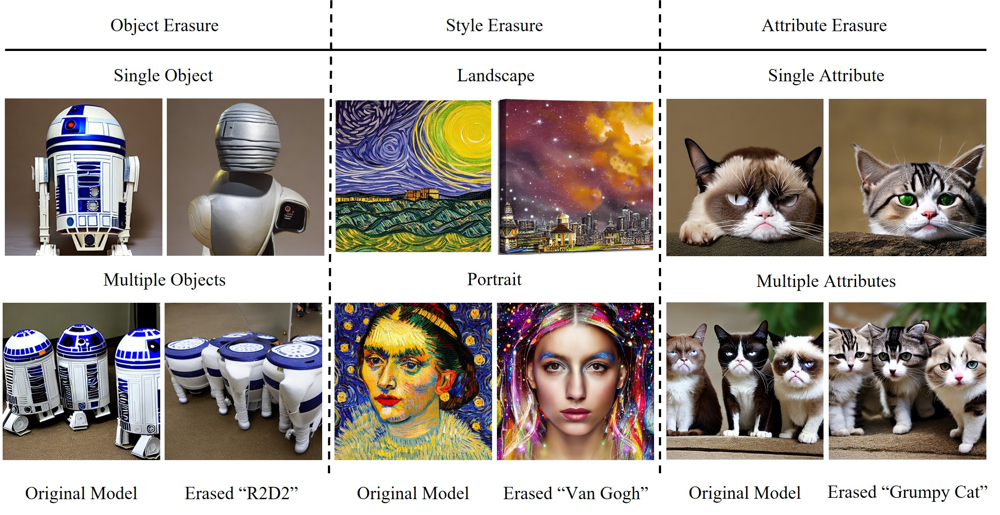

To eliminate inappropriate concepts in Diffusion Models (DMs), current methods typically map them to pre-defined anchor concepts
through fine-tuning techniques. From this, we observe the following problems: 1) There is a semantic deviation phenomenon in images
generated by the erased model: the images generated before and after concept erasure show significant changes in non-erased concept
areas such as background content, protagonist position, and spatial structure layout, even resulting in the complete loss of semantic
information present in the images generated before concept erasure. 2) Existing methods do not clearly distinguish between object and
style erasure tasks. Most concept erasure methods are designed for tasks with distinct main objects (e.g., instances, celebrities). In
contrast, image style is often distributed across the entire image area. Due to the lack of explicit differentiation between the two
tasks, these methods perform poorly when handling style erasure tasks.
To effectively mitigate the aforementioned semantic deviation phenomenon, we propose EC-MSD for Erasing Concepts
in Diffusion Models with Minor Semantic Deviation.
This new fine-tuning framework is based on the attention resteering mechanism, which can customize and remanipulate the
cross-attention matrices of target and anchor concepts according to the characteristics of different erasure tasks.
We also propose a semantic retention loss based on concept disentanglement to assist the attention resteering mechanism in preserving
non-target concept semantics during fine-tuning.
Extensive experiments have demonstrated that our method can not only erase target concepts but also successfully mitigate semantic
deviations in images generated by the erased model, achieving fine-grained, customizable unbiased semantic erasure tailored to
different task characteristics.